什麼是
美好人生？
從「我要什麼」到「什麼值得要」
終極關懷（一）
14:20–17:20 博雅 406
這兩週的終極關懷地圖
這一週：什麼是值得活的人生？
從人們對美好人生的想像談起：事業、感情、財富、健康。
《一路玩到掛》：死亡與人生夢想清單的轉化。
從「我想要什麼」，提升到「什麼是值得追求的人生」（meanings in life）。
下一週：人生本身有沒有意義？
值得活的人生，經得起無常與死亡的挑戰嗎？
死，對你而言比較像一堵牆，還是一扇門？
從虛無主義到相信永恆超越的終極信念（meaning of life）。
今天的五段路
- 壹 序曲：從人們對美好人生的想像談起
- 貳 一路玩到掛
- 參 究竟什麼是終極關懷？
- 肆 對美好人生想像的肯定與批判
- 伍 值得活的人生：終極理想四面向
序曲：從人們對美好人生的想像談起
從事業、感情、財富、健康，到意義與生命安頓
小組討論：美好人生中最重要的事
就一個美好的人生而言，最重要的是哪些事？
全組討論後，列出 3 到 10 項。
請想的是一個美好的人生由哪些事構成，而不是自己過去經歷過的重要事件。
掃碼送出：美好人生中最重要的事
由一位同學代表送出本組的討論精華。
就一個美好的人生而言，最重要的是哪些事？
就一個美好的人生而言，最重要的是哪些事？
一般人對美好人生的想像：健康・快樂・長壽・財富自由
這四項，是現代人很普遍的人生理想。
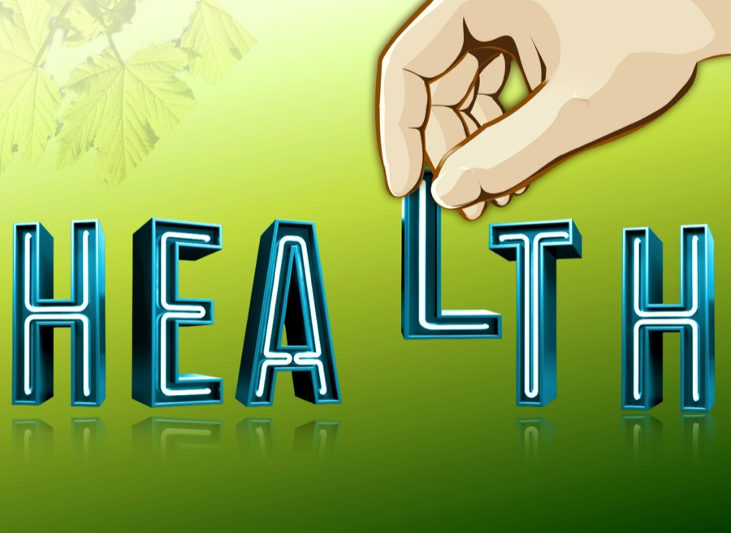
財經專家的人生願望：病得少・老得慢・活得有尊嚴
財經專家賴憲政在節目中，把人生最主要的願望歸納成三件事：
病得少→ 健康
身體少生病。
老得慢→ 長壽
變老的速度慢一點。
活得有尊嚴→ 財富自由
要有尊嚴，就得有錢；沒有錢，就沒有選擇權。
三個願望，正好落在健康、長壽、財富自由這幾項上。
整理自：TVBS《健康2.0》〈打破退休困境 不必存2100萬！賴憲政「72法則」年報酬10%資產7.2年翻倍〉（鄭凱云《如果云知道》訪談）。
民間信仰與美好人生的想像：四面佛
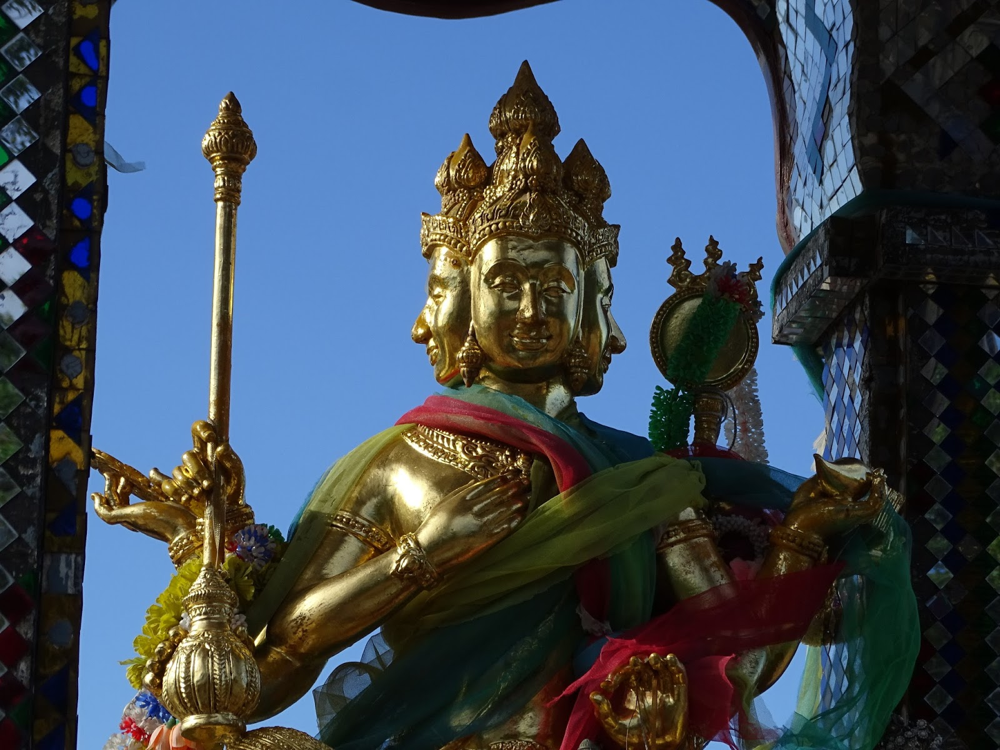
四面佛所祈求的，正是一般人心中的「美好人生」：
- 事業：學業、事業、官位、名望
- 感情：愛情、婚姻、家庭、人緣
- 財富：正財、橫財、偏財、財運
- 健康：平安、治病、親友健康
人性的渴望（一）：健康與長壽
- 健康的重要不言而喻——不健康意味著痛苦，甚至預告死亡；人人都怕痛苦與死亡，因此人人追求健康。
- 長壽源於生存本能、對死亡的恐懼、享受人生與對未來的期待。
- 當然，長壽而不健康的人生，也不會是人們認可的美好人生。
人性的渴望（二）：財富自由
「年輕人總以為金錢就是一切。」——「是啊，等他們老了，就會確定這一點。」
Oscar Wilde《道林·格雷的畫像》（1891）第三章 Lord Henry 之語：“Young people, nowadays, imagine that money is everything.” — “Yes, and when they grow older they know it.”
金錢雖非萬能，沒有錢卻萬萬不能。
人性的渴望（三）：快樂
趨樂避苦，是人性最自然的渴望。
寒風刺骨、腳趾凍到失去知覺，你看見屋裡壁爐溫暖的火光向你招手；快步走近時卻被地毯絆倒，手掌落在炭火上——你因疼痛立刻縮手。
樂趣使人靠近，痛苦使人退避——我們趨樂避苦。
耶魯大學的人生思辨課，p.205。
一般人對美好人生的信念：人生座右銘
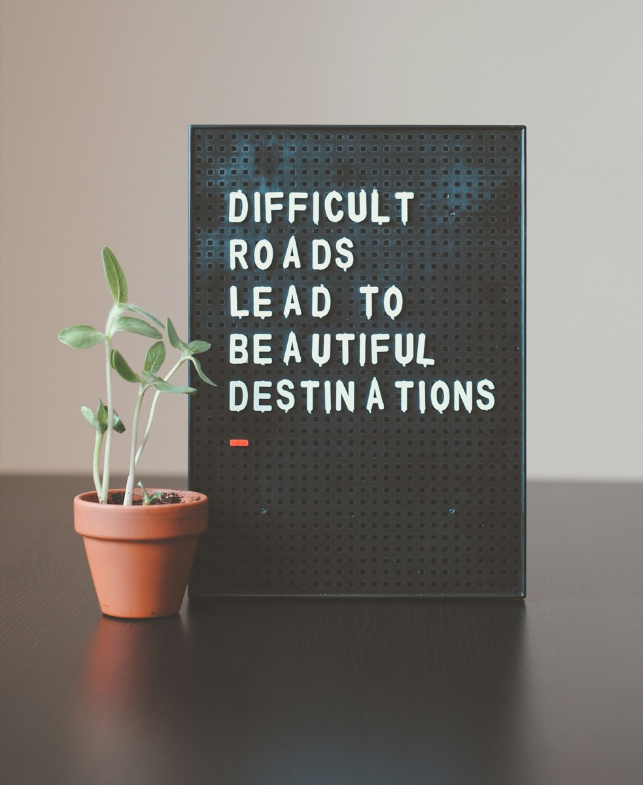
臺大學生的夢想清單 以 2024 臺大新生講座為例
2024 臺大新生講座問卷（共 20 項），此處為得票前十名，第十名並列兩項。
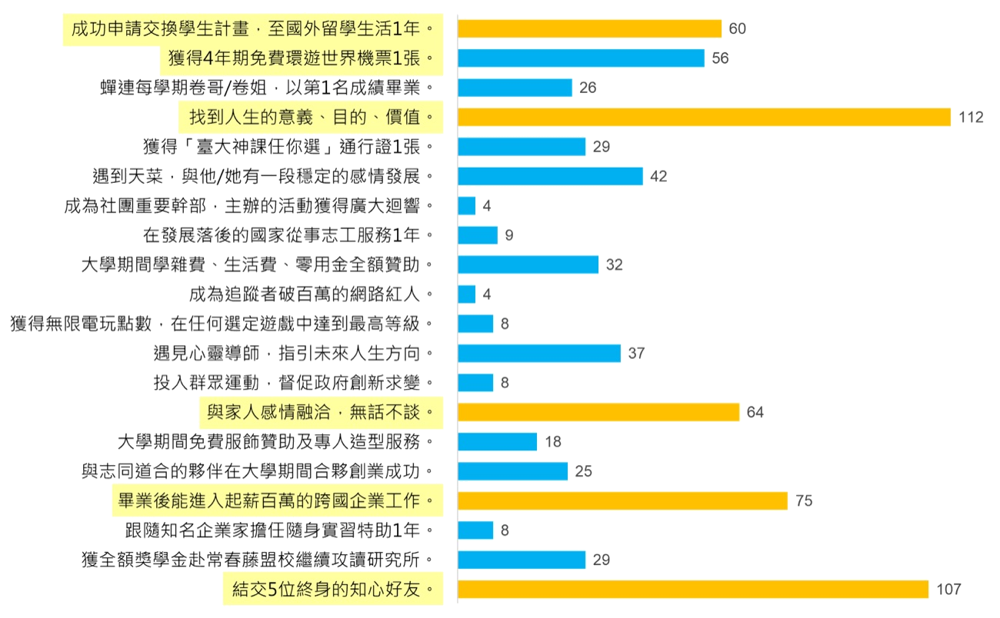
臺大教師的夢想清單 與學生同一份問卷·教師版
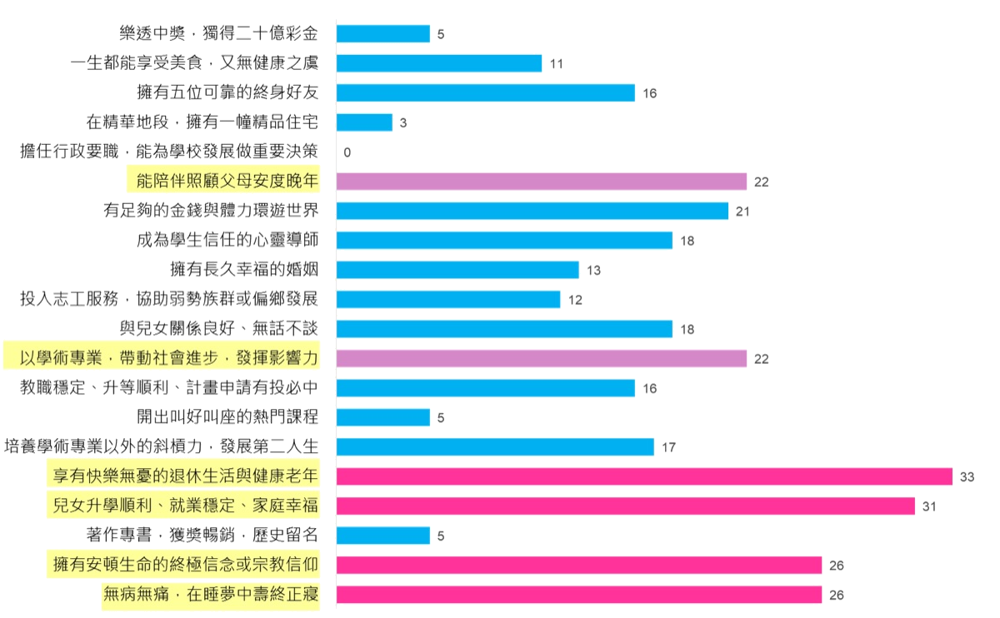
與學生同一份問卷之教師版（共 20 項），此處為得票前十名。
美國新鮮人的夢想清單 2019 CIRP Freshman Survey
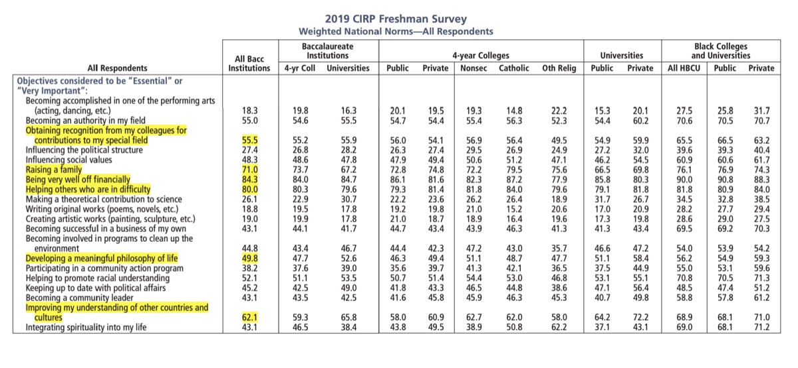
不同時代對美好家庭的想像
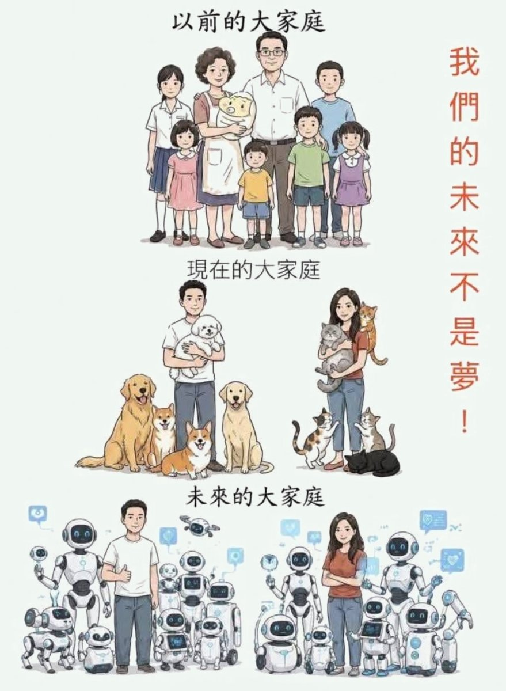
不同世代的人的不同想像：
- 以前：兒孫滿堂、人丁興旺，家族圍成一圈
- 現在：毛小孩成了家人——「我們的大家庭」換了成員
- 未來：機器人相伴的家——「我們的未來不是夢！」
人生夢想清單：同與異
- 找到人生的意義、目的、價值
- 結交五位終身的知心好友
- 畢業後能進入起薪百萬的跨國企業工作
- 成功申請交換學生，至國外留學生活一年
- 與家人感情融洽，無話不談
- 遇到天菜，與他／她有一段穩定的感情發展
- 享有健康快樂無憂的退休生活與健康老年
- 兒女升學順利、就業穩定、家庭幸福
- 無病無痛，在睡夢中壽終正寢
- 擁有安頓生命的宗教信仰或終極信念
- 能夠陪伴照顧父母安度晚年
- 結交五位終身可靠的好朋友
美好人生的想像，透露了什麼？
三份清單同看：不論臺灣或美國、學生或教師，都重視家庭與真摯的友誼、都有不少人把人生的意義列為重要，也都關心幫助他人與利他。
臺大學生把「找到人生的意義、目的、價值」放在第一（112 票遙遙領先）；臺大教師更寫下「擁有安頓生命的宗教信仰或終極信念」。
從事業、感情、財富、健康，往意義與生命安頓深化的方向，已悄悄浮現。
一路玩到掛
死亡與人生夢想清單的轉化
卡特遺書與愛德華悼詞
電影《一路玩到掛 The Bucket List》（2007）
「當我長眠在有著一扇門的牆外面時，我希望他能擔保我，讓我看見門裡面的風光。」
電影最後這組「門」與「牆」的意象，正是這兩週要陪大家一路問到底的終極問題。
這部電影，直面了死亡與虛無這兩道人生最難的課題。
掃碼送出：全組最有啟發的地方，以及為什麼
《一路玩到掛》觀後心得已於課前繳交（課前作業④）——先在小組裡聽取彼此最被觸動的地方，再由各組派一位同學掃描你們那一組的碼，寫下「全組最有啟發的地方」（＋為什麼），投影幕即時更新。
《一路玩到掛》：全組最有啟發的地方，以及為什麼
《一路玩到掛》：全組最有啟發的地方，以及為什麼
究竟什麼是終極關懷？
從「我想要什麼」，提升到「什麼是值得追求的人生」以及「什麼是站得住腳的人生信念」
反思，讓人從盲從變得清明
「未經反思的人生，是不值得活的人生。」—— 蘇格拉底
「吾日三省吾身。」—— 曾子《論語·學而》
人如果從來不去反思那些最素樸的渴望，那就只會跟著本能或主流價值過日子。反思，就是停下來問問自己，在這麼多想要的東西裡，什麼才是真正值得追求的？有沒有一些東西，是我們直覺上、或在原始的價值觀裡想要的，但並不真的值得追求？
從不思不考到終極反思的四個層次
反思才能開啟追本溯源的後設思考，從不假思索的表層向內探索，直達自我超越的終極關懷層，以進行人生第一問的探問。
| 層次 | 意識狀態 | 它在問什麼 | 對應人生問題 |
|---|---|---|---|
| 不假思索 | 出於習慣 | 照平常那樣做就好 | 慣性與習氣 |
| 工具理性層 | 追求效能 | 我做的事，能幫我得到想要的嗎？ | 人生第二問（怎樣活·價值思辨） |
| 目的理性層 | 自我覺察 | 我到底要什麼？階段目標符合整體想像嗎？ | 人生夢想清單 |
| 終極關懷層 | 自我超越 | 什麼才是真正值得追求的至善人生？ | 從夢想清單到遺澤清單， 再到人生第一問（應為何活） |
人生在世，究竟所為何事？
終極關懷要問的，不是個別階段的目標，而是整個人生的目標；
也不是整個人生我「想要」追求的目標，而是整個人生我「應該」追求的目標——什麼是真正值得追求的美好人生？
終極關懷層與自我超越的反思
- 工具理性層的追求效能與目的理性層的自我覺察都是很重要的反思：前者以後者為前提，後者又以自我超越的終極反思為基礎。
- 自我超越的終極反思，關乎人生終極理想與價值觀，涉及更大的客觀真理，能修正我們對人生夢想清單及「美好人生」的想像，例如從夢想清單擴大為遺澤清單。
- 它是第四層次、最究竟的反思——亦即終極關懷層的反思。
壞消息不是要否定你，而是要重新塑造你
三個「壞消息」，都被讀成了轉機。
影片：呂冠緯（均一平台教育基金會執行長），2026 陽明交通大學畢業典禮演講，21:38；引句取自均一頻道影片說明。
終極關懷與東西方思想
終極關懷要探討值得活的人生客觀上可能達到的最高理想，東西方思想都用「至善」這個概念去表達這個理想。
| 傳統／語言 | 表達「至善」的用語 | 意涵 |
|---|---|---|
| 中國哲學中的《大學》 | 止於至善 | 至善概念的中文源頭 |
| 希臘哲學 | εὐδαιμονία（eudaimonia） | 西方「至善」的源頭 |
| 拉丁／士林哲學 | bonum summum | the highest good（最高善） |
| 當代英文 | flourishing | 傳遞「至善」的當代義蘊 |
a life of flourishing ＝ Life worth living ＝ a life of eudaimonia
終極關懷兩層面
終極關懷探討值得活的人生所能達到的至善理想，也追問什麼是有意義的人生。什麼是值得活的人生？什麼是有意義的人生？這兩個問題，涉及兩個層次。
第一層 終極理想
值得活的人生，所追求的至善（flourishing）是什麼？
在人生中所能體驗、創造與實現的各種意義：meanings in life。
第二層 終極信念
人生本身有沒有意義？生命終究歸於虛無，還是通向永恆？
人生整體的意義：meaning of life。
人生第一問：人（我）應為何而活？
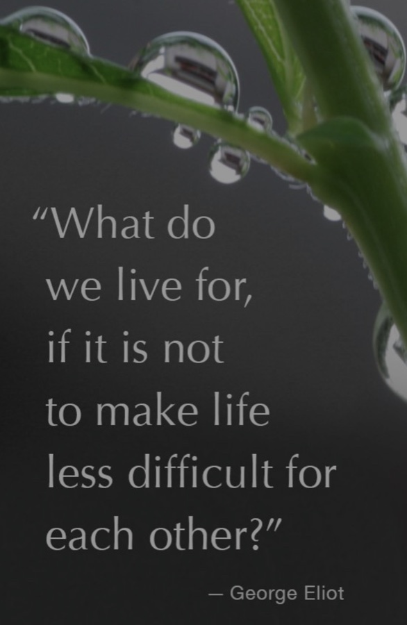
什麼樣的人生，值得人／我追求？
- 這問題超越了原來的夢想清單，向更普遍的方向探問：對一個人而言，什麼是值得追求與活出的至善目標？
- 終極關懷首先關心的是什麼是值得活的人生，亦即什麼是人生的終極理想；進一步則關心什麼是有意義的人生，而這個問題會涉及生命本身是否有意義的終極信念問題。
- 這是終極關懷的探問，使「為何而活」從實然提升到應然——探問所建立的終極理想與終極信念，正是人生價值體系的根基。
對美好人生想像的肯定與批判
科學、宗教與文化的觀點
科學的肯定：素樸的渴望，確實與幸福相關
當代科學並不否定人們對健康、財富、快樂與關係的渴望——實證研究反而支持它們與幸福感的關聯。
- 健康——世界衛生組織（1948）定義健康為「身體、心理與社會安適的完整狀態，而不僅是沒有疾病或虛弱」；近年更強調靈性健康是全人健康的核心——WHO 執委會曾提案將 spiritual 納入定義，學界亦以「身、心、社會、靈性」四面向理解全人健康。
- 財富——Killingsworth、Kahneman 與 Mellers（2023）的「敵對式合作」研究發現：對多數人而言，幸福感確實隨收入持續上升，超過年收入十萬美元仍未見天花板。
- 關係——哈佛成人發展研究追蹤逾 85 年：最能預測晚年幸福與健康的，不是財富或名聲，而是關係的品質。
- 快樂——Seligman 的 PERMA（2011）把幸福拆解成可測量的五元素：正向情緒、投入、關係、意義、成就。
WHO《組織法》前言（1948）；Killingsworth, Kahneman & Mellers, PNAS (2023)；Harvard Study of Adult Development（Waldinger）；Seligman, Flourish (2011)。
宗教與文化的肯定（一）：健康與長壽
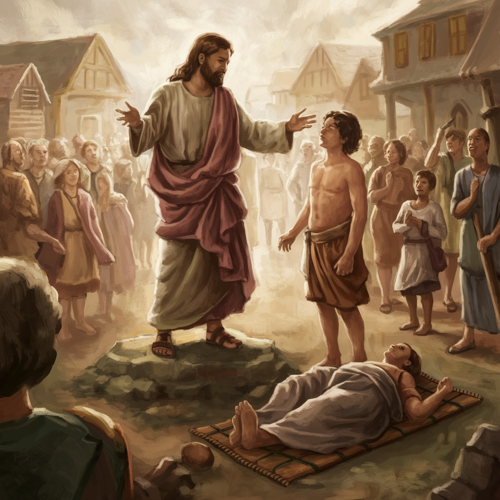
宗教信仰雖不直接延長壽命，卻透過減壓、社會支持、健康行為與心理調適，間接提升健康，從而可能有助長壽。
- Hummer 等（1999）：每週參加宗教活動超過一次者，與從不參加者相比，20 歲時的預期壽命相差 7 年。
- 哈佛公衛（2016）：每週參加宗教聚會超過一次的女性，死亡風險降 33%。
宗教與文化的肯定（二）：財富
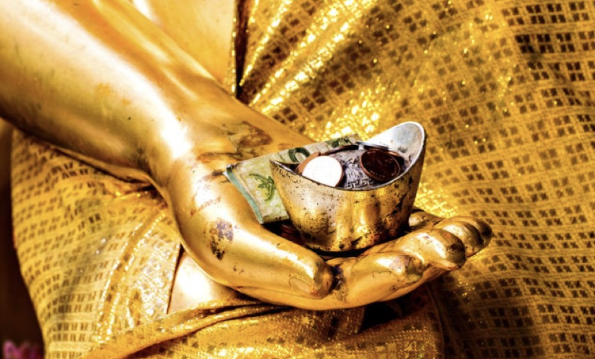
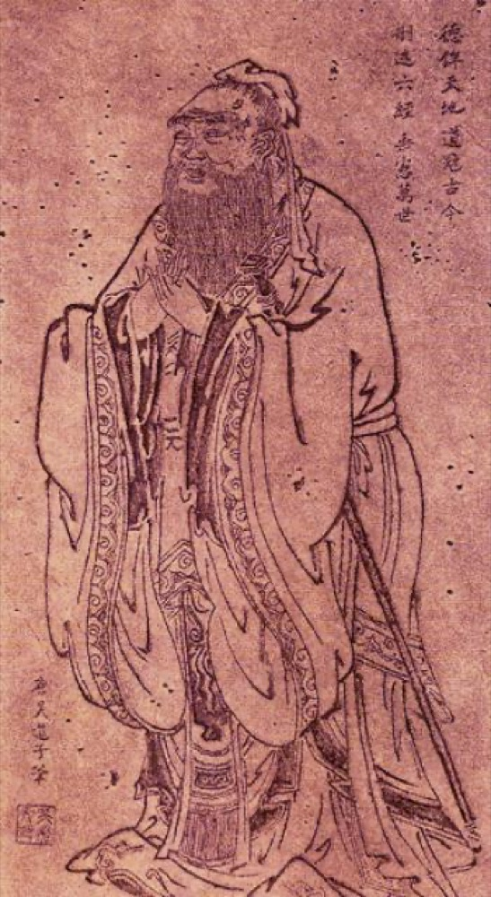
宗教與文化的肯定（三）：快樂
一位母親來懺悔：女兒問她「該不該擔任學校運動社團經理？」她答——「怎麼做能讓你的大學入學申請書看起來最漂亮？」女兒失望地離開，轉而去問輔導老師；輔導老師卻問：「怎麼做能讓你最快樂？」
母親說：「我當了一輩子基督徒，女兒來尋求有智慧的忠告時，我的忠告卻一點智慧也沒有。」
輔導老師的「智慧」似乎來自一個對美善人生更深、更完整的願景，而且不是隨隨便便的一個美善人生願景，而是現今社會最受歡迎的願景。與追求成功、唯物主義以及成名的渴望這些俗氣的願望相比之下，這個願景顯得有深度、不虛假而且觸及人性。
耶魯大學的人生思辨課，p.60–61。
科學的批判：素樸的渴望，各有其限度
科學證實這些渴望確實帶來幸福；把它們放回整個人生來看，卻各有不足。
| 一般人的想像 | 科學的發現 | |
|---|---|---|
| 財富 | 錢越多越快樂 | 錢確實有用：多數人收入越高越快樂。但把錢當成人生重要目標的人，幸福感反而較低。 |
| 快樂 | 快樂就是美好人生 | 快樂和意義是兩回事：需求被滿足會帶來快樂，卻和意義幾乎無關。富裕國家的人對生活較滿意，意義感卻比貧窮國家的人低。有意義的人，整體幸福感也較高。 |
| 健康 | 健康讓人快樂，也讓人長壽 | 活得久，不等於活得好：全球平均約有 9.6 年活在病痛中，這段落差二十年來越拉越大；生命最後幾年，幸福感也常急遽下滑。健康也不等於美好人生：超過一半的中重度失能者，說自己活得好或很好。 |
| 關係 | 好的關係讓人幸福 | 關係是幸福與健康最穩定的支柱；但關係也會失去。喪偶或離婚之後，受打擊最深的人，多年後仍回不到原來的生活滿意度。 |
這些渴望都值得追求，科學也證實它們帶來幸福；但它們都會改變、會失去。當健康衰退、所愛的人離去，還有什麼能撐起人生？
Killingsworth 等 2023；Dittmar 等 2014；Baumeister 等 2013；Oishi & Diener 2014；Li 等 2021；Garmany & Terzic 2024；Gerstorf 等 2016；Albrecht & Devlieger 1999；Holt-Lunstad 等 2010；Lucas 等 2003（書目見「引用來源」頁）。
佛教的批判反思
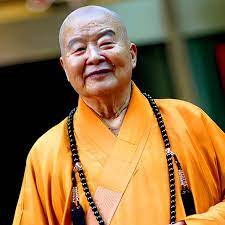
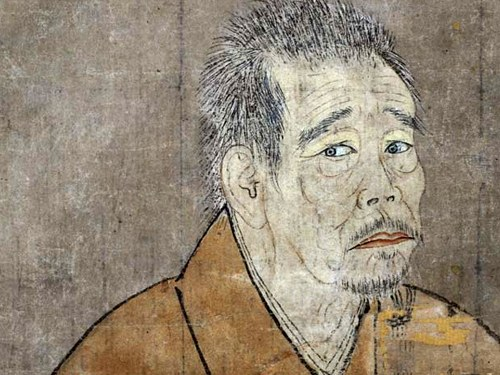
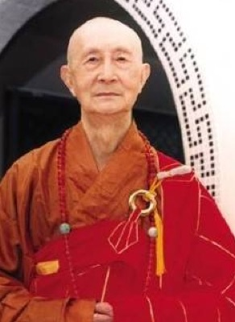
基督信仰的批判反思
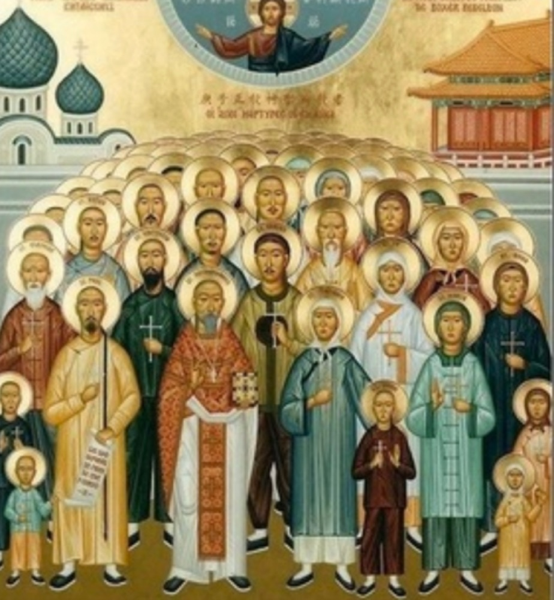
15「你們要謹慎，躲避一切貪婪，因為一個人縱然富裕，他的生命並不在於他的資產。」
20「糊塗人哪！今夜就要索回你的靈魂，你所備置的，將歸誰呢？
21 那為自己厚積財產而不在天主前致富的，也是如此。」
儒家對富貴的批判反思
孟子：「魚，我所欲也；熊掌，亦我所欲也。二者不可得兼，舍魚而取熊掌者也。生，亦我所欲也；義，亦我所欲也。二者不可得兼，舍生而取義者也。所欲有甚於生者，所惡有甚於死者——非獨賢者有是心也，人皆有之，賢者能勿喪耳。」
孔子：「飯疏食飲水，曲肱而枕之，樂亦在其中矣。不義而富且貴，於我如浮雲。」（述而）
孔子論顏回：「賢哉回也！一簞食，一瓢飲，在陋巷。人不堪其憂，回也不改其樂。賢哉回也！」（雍也）
生命與道義，重於富貴——富貴並非「值得活的人生」之必要條件。
美好人生與主流價值的限度
- 健康、長壽、財富、快樂都是人性自然的渴望，三大傳統也都誠實肯定其正面意義。
- 但它們都不是終極：長壽不究竟、財富非善非惡、快樂須有意義與慈悲、健康也非生命的全部，而且終將失去。
- 它們最大的共同限度，是容易停在自我中心——把「我」無限膨脹，缺乏與他者、與真理的連結。
- 關係讓人超越自我中心，但關係終將隨生命隕落而在時間洪流中消逝。
那麼，什麼才真正撐得起一個值得活的人生？
值得活的人生——終極理想四面向
幸福，有某種客觀的、人性共通的標準
從「我要什麼」到「什麼值得要」：渴望的深化
| 素樸的渴望 | 停在自我中心 | 經終極理想深化 |
|---|---|---|
| 健康 | 我的身體不要壞 | 身、心、靈的全人健康——含靈性健康，向內覺察、向上超越 |
| 財富 | 我要擁有更多 | 資糧與分享——財富為修道與利他所用 |
| 快樂 | 我要感覺良好 | 有意義的喜樂——經得起苦難與無常的考驗 |
| 關係 | 我需要被愛 | True love ≠ fish love——為對方的好而愛 |
| 長壽 | 我要活久一點 | 無量的生命——永恆與終極意義的追問 |
終極理想不是外加於渴望之上的規範，而是這些渴望走到底、走到深處時，自然顯露的方向——接下來，我們就把這些方向收攏為終極理想的四個面向。
終極理想的四個面向
真正值得活的人生，包含四個彼此相連的面向——接下來，我們一一展開。
- 一自我超越——自我覺察、自我實現，並進一步超越自我
- 二與萬物及他者的連結——超越自我中心的愛
- 三經得起無常與死亡的挑戰——以死亡為參照，照亮何為值得
- 四能答覆人生意義——活著的手段，不等於值得為之而活的意義
面向一：自我覺察、自我實現與自我超越
值得活的人生是反思的人生，因此人要在可能範圍內，不斷地向內、向深處覺察，並且進一步自我超越——這正回扣前面「反思的四個層次」。
| 靈性／覺性 | 意識層次 | 行動範疇 | 探索主題 |
|---|---|---|---|
| 無明／直覺 | 不假思索 | 習慣 | 出於直覺或慣性做事 |
| 工具理性 | 追求效能 | 策略 | 我所做的，能達到我要的目標嗎？ |
| 目的理性 | 自我覺察 | 願景 | 我到底要什麼？ |
| 靈性覺察 | 自我超越 | 真理 | 我想要的，真的值得要且具終極意義嗎？ |
面向二：與萬物及他者的連結
萬物一體之仁：王陽明《大學問》
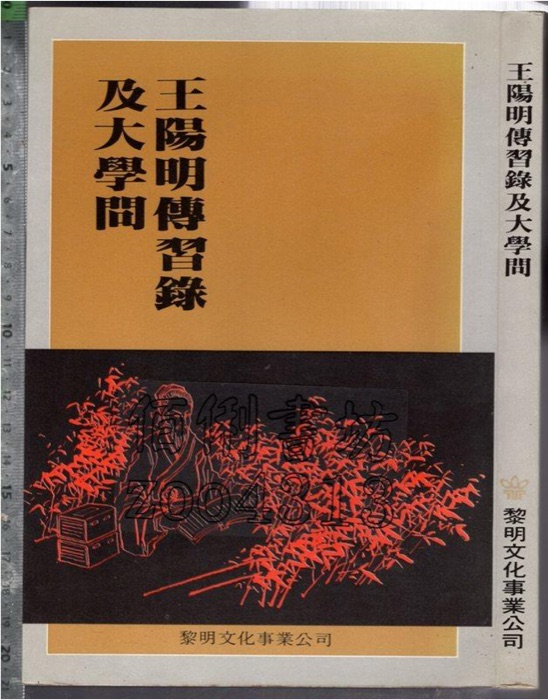
「大人者，以天地萬物為一體者也。其視天下猶一家，中國猶一人焉……見孺子之入井，而必有怵惕惻隱之心焉，是其仁之與孺子而為一體也；見鳥獸之哀鳴觳觫，而必有不忍之心焉……見草木之摧折而必有憫恤之心焉……見瓦石之毀壞而必有顧惜之心焉——是其仁之與瓦石而為一體也。」
仁心本與萬物相連為一體；所謂「自我中心」，只是把自己看小了。
三校共識：值得的人生，是愛與慈悲的人生
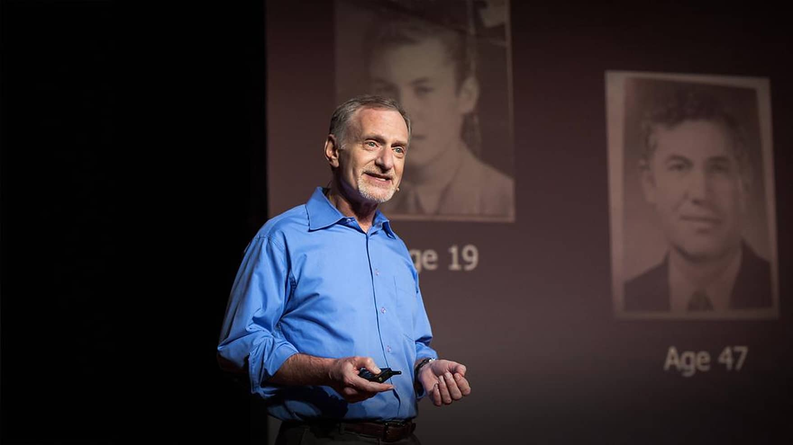
「好的關係，讓我們更快樂、也更健康。」
Good relationships keep us happier and healthier.
- 哈佛成人發展研究追蹤逾 80 年、724 人——最能預測晚年幸福健康的，不是財富、名聲或成就，而是「關係的品質」；重點是品質不是數量。
- 值得活的人生不應是自我中心的，而應包含與他者的連結——哈佛、耶魯的幸福學研究與跨研究的後設分析殊途同歸：值得的人生，必須是愛與慈悲的人生。
而美好的關係，需要這些質素——
活得最好的人，是願意傾身投入家庭、朋友與社群的人。
Harvard Study of Adult Development（Waldinger）；Holt-Lunstad 2010（社會連結強者存活率高 50%）；U.S. Surgeon General 2023。
面向二：True love 是超越自我中心的愛
「你愛魚，所以你把魚抓起來吃掉了——這不是愛魚，這是愛你自己。」
真正的愛，是為了對方的好而付出，不是把對方當成滿足自己的手段。愛賦予意義，愛就是天堂。
影片：True Love ≠ Fish Love（Rabbi Dr. Abraham Twerski）。
感恩，讓關係與幸福增長
寫下對你影響最深的人，打一通電話向他道謝——幸福感隨之上升。
感恩是美好關係的核心質素之一：它把注意力從「我」轉向「成就了我的那些人」，正是非自我中心之愛的日常練習。
影片：SoulPancake〈An Experiment in Gratitude · The Science of Happiness〉（繁中字幕為本課自製）。
終極理想的另外兩個面向
終極理想的四個面向，本週談了前兩個。
面向三 經得起無常與死亡的挑戰
人生願景如果沒有把「人終將一死」考慮進去，就不算完整。想到人生有限，我們會更清楚什麼值得去做。
面向四 能答覆人生意義的問題
知道怎麼活下去還不夠，人還需要知道自己為了什麼而活。
這兩個面向仍然屬於終極理想。不過想得越深，就越會碰到另一個問題，也就是生命本身到底有沒有意義。這是終極信念的問題，我們下週再談。
下週見
W8（10/28）一扇門，還是一堵牆？——死亡與無常，永恆vs.虛無
靈修週記③
一扇門，
還是一堵牆？
死亡與無常，永恆vs.虛無
終極關懷（二）
14:20–17:20 博雅 406
今天的六段路
- 壹 值得活的人生：終極關懷與終極理想四面向
- 貳 生命意義的探索：牆或門的終極信念
- 參 死，對你而言比較像一堵牆還是一扇門？
- 肆 攤開來談：死後，真的什麼都沒有了嗎？
- 伍 理性的盡頭
- 陸 總結
值得活的人生——終極理想四面向
終極關懷兩層面四面向
終極關懷兩層面
終極關懷探討值得活的人生所能達到的至善理想，也追問什麼是有意義的人生。什麼是值得活的人生？什麼是有意義的人生？這兩個問題，涉及兩個層次。
第一層 終極理想
值得活的人生，所追求的至善（flourishing）是什麼？
在人生中所能體驗、創造與實現的各種意義：meanings in life。
第二層 終極信念
人生本身有沒有意義？生命終究歸於虛無，還是通向永恆？
人生整體的意義：meaning of life。
人生第一問：人（我）應為何而活？
什麼樣的人生，值得人／我追求？
- 這問題超越了原來的夢想清單，向更普遍的方向探問：對一個人而言，什麼是值得追求與活出的至善目標？
- 終極關懷首先關心的是什麼是值得活的人生，亦即什麼是人生的終極理想；進一步則關心什麼是有意義的人生，而這個問題會涉及生命本身是否有意義的終極信念問題。
- 這是終極關懷的探問，使「為何而活」從實然提升到應然——探問所建立的終極理想與終極信念，正是人生價值體系的根基。
終極理想的四個面向
真正值得活的人生，包含四個彼此相連的面向——接下來，我們一一展開。
- 一自我超越——自我覺察、自我實現，並進一步超越自我
- 二與萬物及他者的連結——超越自我中心的愛
- 三經得起無常與死亡的挑戰——以死亡為參照，照亮何為值得
- 四能答覆人生意義——活著的手段，不等於值得為之而活的意義
面向一：自我覺察、自我實現與自我超越
值得活的人生是反思的人生，因此人要在可能範圍內，不斷地向內、向深處覺察，並且進一步自我超越——這正回扣前面「反思的四個層次」。
| 靈性／覺性 | 意識層次 | 行動範疇 | 探索主題 |
|---|---|---|---|
| 無明／直覺 | 不假思索 | 習慣 | 出於直覺或慣性做事 |
| 工具理性 | 追求效能 | 策略 | 我所做的，能達到我要的目標嗎？ |
| 目的理性 | 自我覺察 | 願景 | 我到底要什麼？ |
| 靈性覺察 | 自我超越 | 真理 | 我想要的，真的值得要且具終極意義嗎？ |
面向二：與萬物及他者的連結
萬物一體之仁：王陽明《大學問》
「大人者，以天地萬物為一體者也。其視天下猶一家，中國猶一人焉……見孺子之入井，而必有怵惕惻隱之心焉，是其仁之與孺子而為一體也；見鳥獸之哀鳴觳觫，而必有不忍之心焉……見草木之摧折而必有憫恤之心焉……見瓦石之毀壞而必有顧惜之心焉——是其仁之與瓦石而為一體也。」
仁心本與萬物相連為一體；所謂「自我中心」，只是把自己看小了。
三校共識：值得的人生，是愛與慈悲的人生
「好的關係，讓我們更快樂、也更健康。」
Good relationships keep us happier and healthier.
- 哈佛成人發展研究追蹤逾 80 年、724 人——最能預測晚年幸福健康的，不是財富、名聲或成就，而是「關係的品質」；重點是品質不是數量。
- 值得活的人生不應是自我中心的，而應包含與他者的連結——哈佛、耶魯的幸福學研究與跨研究的後設分析殊途同歸：值得的人生，必須是愛與慈悲的人生。
而美好的關係，需要這些質素——
活得最好的人，是願意傾身投入家庭、朋友與社群的人。
Harvard Study of Adult Development（Waldinger）；Holt-Lunstad 2010（社會連結強者存活率高 50%）；U.S. Surgeon General 2023。
面向三：經得起無常與死亡的挑戰
值得活的人生願景，若忽略「人終將一死」這個事實，就不算完整——無論我們多麼努力地活過。
死亡，逼我們把人生當「整體」來看：當時間有限，以死亡為參照，反而照亮了「何為值得」。
參酌《耶魯大學的人生思辨課》，頁 238。
馬斯克的願景，經得起面向三的拷問嗎？
馬斯克的答覆：永續的未來、多星球物種、走向星際，以及隨之而來的冒險感——讓人對未來充滿興奮與期待，"makes life exciting and worth living"。
這是一種動人的自我超越。但它有沒有處理「人終將一死」這件事？
對許多人而言，這個夢想既遙遠，也並未處理「我終將死去」這件事——願景再壯闊，仍須經得起無常與死亡的考驗。
影片：Elon Musk 論生命意義。
面向四：能答覆人生意義的問題
「我們完全可能知道『如何活的手段』，卻不知道『值得為之而活的意義』。」
It is thoroughly possible for us to know the means to live without knowing the meaning to live for.
值得活的人生，必須是能安放意義的人生——不只知道怎麼活下去（means to live），更要知道為何值得這樣活（meaning to live for）。這是在人生之中活出的意義（meanings in life），與前三個面向同屬終極理想的層面。
但這裡浮現一個更底層的追問——
如果生命本身終歸虛無，人生之中的意義還撐得住嗎？
這已不是終極理想的問題，而是終極信念（meaning of life）的問題。四個面向到此完成；接下來，我們就轉向它。
終極理想四面向
人性的渴望需要肯定，也需要超越——真正值得活的人生，包含這四個彼此相連的面向。
自我超越
在可能範圍內，自我覺察、自我實現，並進一步自我超越（呼應四層次最高層）。
非自我中心的愛
不把「我」無限膨脹；核心是美好關係、付出、慈悲與愛。True Love ≠ Fish Love——「愛賦予意義，愛就是天堂」。
經得起無常與死亡的挑戰
忽略「人生會以死亡終結」的願景，就不算完整。
反問 Musk：多星球物種讓生活值得，但觸及了死亡之限與終極意義嗎？
能答覆人生意義
means to live ≠ meaning to live for
值得活的人生，必須能安放人生之中的意義（meanings in life）——並由此逼出更深的一問：生命本身呢？
生命意義的探索——牆或門的終極信念
美好人生的願景？成住壞空的挑戰！
這些想像，是「終極關懷」嗎？
先別急著答——用四個問題，量一量我們與「終極關懷」的距離。
這些想像，是「終極關懷」嗎？——靈性覺察層與終極意義
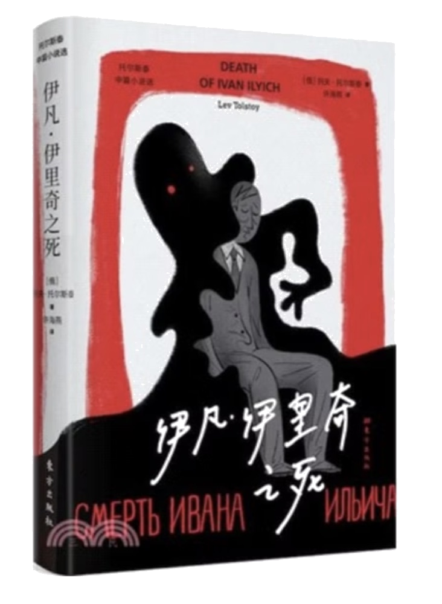
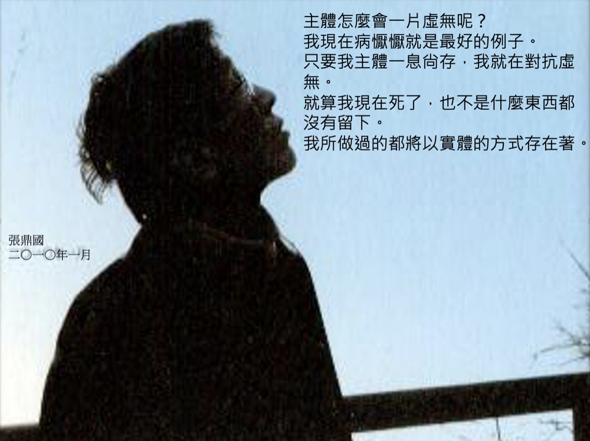
健康無價！
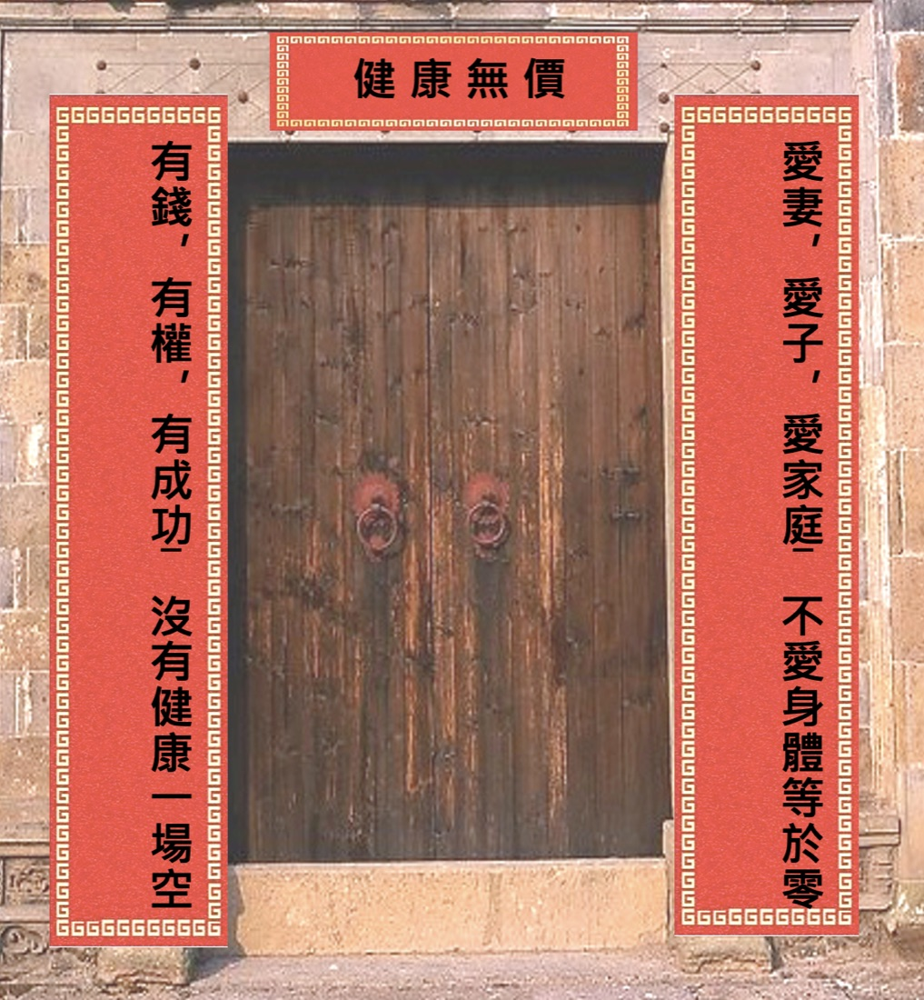
大病後，人常驚覺「健康無價」。
但，健康一定能維持嗎？生老病死可以避免嗎？
以健康長壽為終極目標的人生，就圓滿了嗎？
（按 → 或空白鍵）
耶魯大學的人生思辨課與 Angela Williams Gorrell
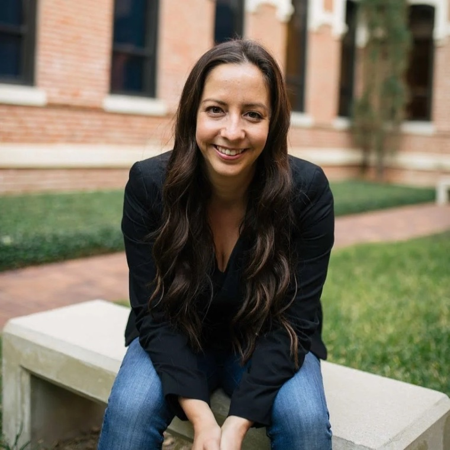
Angela Williams Gorrell 到耶魯大學從事喜樂神學的研究，並與《Life Worth Living》三位作者一起教授「值得活的人生」這門課。
然而就在那段期間，她接連在四個星期內失去三位親人——使得「研究喜樂、卻同時與苦難共處、並度過苦難」，成為她當時最切身的功課。
Gorrell 的「人行道時刻」
我打開車子的右前門，從腳墊上撿起我的手機。
我驚訝地發現，有七通未接來電，是媽媽打來的，還有一封她發的簡訊。
簡訊的內容是：「達斯汀自殺了。」……
眼淚不斷流下來，像浴缸的水滿出來，源源不絕。我不假思索，立刻回電話給媽媽。
我記得我一次又一次大喊「不要！」，一邊哭，一邊要她告訴我，那不是真的……
我在停車場裡無意識地亂走，一邊聽她告訴我：那是真的。
突然，我的手機滑落在教會停車場的人行道上——我開始號啕大哭。 —— Angela Williams Gorrell《喜樂的萬有引力 The Gravity of Joy》（引自《耶魯大學的人生思辨課》p.234）
人生風暴與終極願景
在最後一堂課，安琪拉說完故事後看著所有學生，教室陷入肅穆的沉默。她深吸了一口氣，對他們說：
「我希望你們能有一種人生願景，能夠支持你撐過那個人行道時刻。將來可能會有那麼一天，世界停止轉動了，你的心碎了。那時，你需要一個值得你用此生追求的人生願景，幫助你度過那個人生風暴。當然，你的願景會因為那些人行道時刻變得更有深度、得到轉化、變得更清晰；但我希望你現在的願景，已經有可以為你指引方向的羅盤，或是可以使你穩穩定住的船錨。」——《耶魯大學的人生思辨課》p.234–235
人生風暴與終極願景
那天，所有人離開教室時都覺得：我們的繁盛人生願景，受到了人生中「人行道時刻」的考驗，變得更精煉了。要挺過人生的風暴，你需要的不只是對於「值得活的人生」的憧憬，而是如同安琪拉所說的，你需要一種能夠將你穩穩定住的船錨，一種將你的心安住的終極信念。
——《耶魯大學的人生思辨課》p.234–235安鈞璨參與《康熙來了》
人生無常，意義何在？
歌手安鈞璨，2013 年確診肝癌，2015 年復發後約兩週離世，得年 31 歲。他生前最後的錄影問：「會不會有人記得我？」、「活著到底有什麼意義？」
（看完影片，按 → 或空白鍵）
《道德經》：上士聞道，下士聞道大笑之
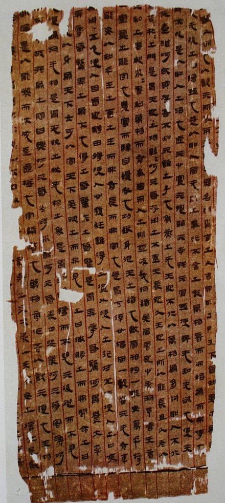
「上士聞道，勤而行之；
中士聞道，若存若亡；
下士聞道，大笑之。
不笑，不足以為道。」 ——《道德經》第四十一章
越深刻的終極道理，聽在不同人耳裡，反應往往天差地遠——連嘲笑，都是意料中事。
托爾斯泰的「井中人」寓言
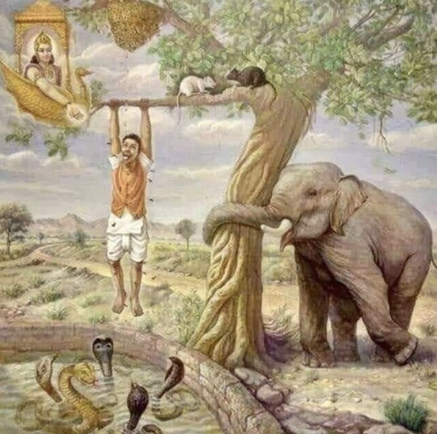
一名旅人被猛獸追逐，逃入一口枯井，卻見井底盤據著一條張口欲吞噬他的巨龍——上不能逃（猛獸），下不敢跳（巨龍）。
他攀住井壁縫隙裡長出的一根樹枝，卻見一黑一白兩隻老鼠正不停繞著枝幹啃咬，牠們代表日與夜，一點一滴啃噬著生命。樹葉上有幾滴蜂蜜，死亡近在眼前，但蜂蜜仍讓人感到甜美。
蜂蜜代表人生中的各種價值體驗，也就是人在一生中所能體驗、創造與實現的美好。即使身處絕境，這些體驗依然真實可貴，它們屬於第一層「終極理想」所關心的人生中的意義（meanings in life）。
日與夜不停流逝，樹枝終將被啃斷，這代表人面對死亡與無常的困境。人必須在這裡建立自己的終極信念，追問人生本身究竟有沒有意義，這屬於第二層「終極信念」所關心的人生的意義（meaning of life）。
死，是一堵牆，還是一扇門？
先每人投一票，再到小組裡說出理由。
死，對你而言比較像一堵牆還是一扇門？
先每人投一票，理由留到小組討論。
已投 0 票
（虛無主義）
（不可知論）
（宗教信仰）
掃碼送出：組立場與理由
每組彙整一句立場（牆／門／不能確定）與理由，由一位同學代表送出。
死，比較像一堵牆還是一扇門？各組的立場與理由
死，比較像一堵牆還是一扇門？各組的立場與理由
超越死亡的嘗試（一）：否定死亡
超人類主義（Transhumanism）
Zoltan Istvan 與超人類主義黨：寄望以超級人工智慧與科技增強人的精神、體力與資質，克服殘疾、疾病、痛苦、老化與死亡，讓人達到永恆不死。
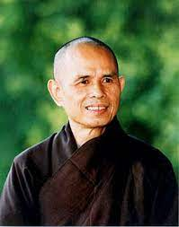
一行禪師《無死，無懼》（No Death, No Fear）
沒有生、也沒有死，真正的死亡並不存在，故人不必害怕死亡。
哈姆雷特問「To be, or not to be」；一行禪師說，佛陀會回答：「that is not the question.」
超越死亡的嘗試（二）：遺忘死亡 與 死亡禁忌
遺忘死亡——《西藏生死書》：
「我們大多數人都這麼醉生夢死……年輕受教育，找工作，結婚生子，買房子，在事業上力爭上游……有些人最大的煩惱，居然是下次去哪裡度假。整個生活步調如此緊張，完全沒有時間想到死亡。」
死亡禁忌——集體刻意避開與死亡相關的一切（如「沒有四樓」），彷彿只要不談論，就不會死。
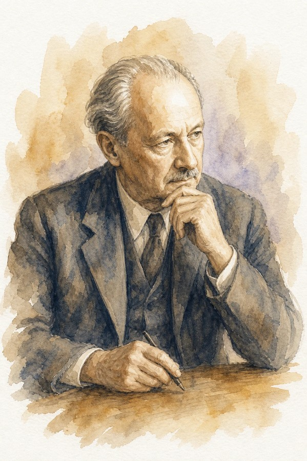
海德格：人要意識到人隨時可能會死，而非「not me, not now」。認真思考死亡，會讓人有一種脫離社會常軌的感覺。當我擺脫了所有那些我用來定義自己的文化外衣，從零開始面對「我是誰？」「我是什麼」等問題，我才有可能重新開始。
超越死亡的嘗試（三）：不懼死亡
奧理略《沉思錄》：死亡如同新生，是生命的過程。不須對死亡膽怯，也不該為此焦慮——就如宇宙交替變化，才得以生生不息。
伊比鳩魯：死亡未到之前，不必懼怕；死亡若已到來，也無可畏懼。
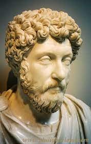
《沉思錄》
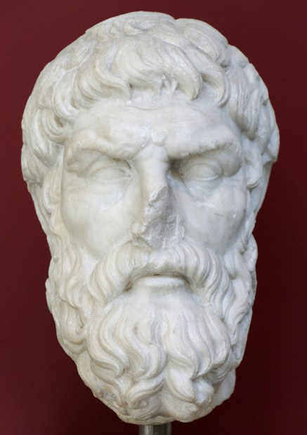
《致美諾西斯的信》
這些嘗試，皆有其限度
- 死亡無法完全否定——超人類主義仍不現實。
- 一行禪師「無死、無懼」失之極端——他背後的「絕對無我」立場本身就比較極端——畢竟連惠敏法師也承認，人仍有「相對的我」（並非真的無我）。
- 遺忘死亡與死亡禁忌，像鴕鳥把頭埋進沙堆——以為看不見，危險就不存在。
- 而「不懼死亡」，又談何容易？
每一種嘗試都有它的智慧，卻也都有觸不到的邊界——死亡，仍是那道理性無法透視的界限。
而人，本來就有理由怕死
「活下去，我可以呷著馥郁的奶茶靜靜地讀一個上午小說，可以聽著淅瀝的雨聲默默地發一個下午呆……我可以與愛人相顧無言——
直到死亡來臨，我的意識消失，這一切『可以』都不再可以。
想到有一天這本書仍在，風仍在吹，河仍在流，但我卻歸於無有，我就打從心底裡寒出來。」——《好青年哲學讀本》
死亡是所有經驗的終止。前面種種「超越死亡」的嘗試，最終都繞不過這道理性無法透視的界限——於是，人在這個問題上，只剩下幾種可能的立場。
攤開來談：死後，真的什麼都沒有了嗎？
先看各大宗教怎麼說，再用哲學檢驗：虛無主義能不能被確信？
世界各大宗教，怎麼看死後？
- 佛教 講輪迴與涅槃，不接受「人死如燈滅」的斷滅見。
- 基督宗教 相信靈魂不滅、肉身復活。
- 道教與民間信仰 相信魂魄與神明。
- 印度教 講輪迴與解脫。
人類大多數的宗教傳統，都不認為生命隨死亡歸於虛無。
藏傳佛教：不丹小王子的前世記憶
- 阿旺·吉美，2013 年生於不丹王室，外祖父是第四世國王。
- 據王室所述，他不到兩歲就指著自己說「我是毗盧遮那」，三歲起向家人講述前世修行的細節。
- 2016 年，不丹國師與中央僧團認證他是八世紀大譯師毗盧遮那的轉世。
- 2019 年，六歲的他到四川的毗盧遮那修行洞，據報導沒有人指引，就認出當年的禪修處與手印、腳印。
不丹王太后多傑·旺姆親述外孫的轉世事蹟（九如本真人生，2025）
民間信仰：借屍還魂？雲林麥寮的朱秀華事件
她說
1959 年，麥寮婦人林罔腰昏迷醒來後，自稱是金門 17 歲少女朱秀華：八二三砲戰時搭船逃離金門，在台西外海被漁民劫財推下海淹死。家人說她原本不識字、只說臺語，醒來後卻會說國語、識字，臺語還帶金門腔。
查證
1959 年：丈夫託人到金門，查到警察局確有一位工友叫朱清，與她說的父親同名。1961 年：前金門縣府秘書長說，朱清的妻子叫「日春」，不是她說的「蔡蕊」。朱秀華本人是否存在、是否遇難，沒有查證紀錄。
台灣啟示錄 2018.5.20
三立新聞 2018
第二週我們問的是：這個說法查證得了多少？今天換一個問題：如果人死後，意識真的還在，你會怎麼看待自己的死亡？
媽祖信仰（一）：天網恢恢、醫院前的神轎
- 媽祖破案：民國 53 年，臺北市副議長的司機捲款十五萬元潛逃。副議長偕刑警到北港朝天宮向媽祖祈求，正在解籤時，刑警一轉頭，竟看見那名司機跪在另一張神案前，當場逮捕。
- 醫院前的神轎：白沙屯媽祖進香經過童綜合醫院，神轎在玻璃前搖擺不去；信眾說，媽祖是在提醒院方匾額掛錯了位置。
白沙屯媽祖網路電視台：〈媽祖婆一直敲玻璃...原來是要跟童綜合總院長說這件事〉

〈媽祖破案 無巧不成書〉剪報（點圖放大閱讀）
媽祖信仰（二）：風雨免朝
- 媽祖是海神。信眾相信，媽祖出巡時，風雨會前來朝見，所以遶境常常遇雨。廟方這時會請出一面令旗，上面寫著「風雨免朝」：請風雨不必來朝拜。
- 2017 年 10 月，嘉義新港舉行「臺日文化慶典平安祭」，大雨下了兩天，上千人的踩街眼看要取消。主辦單位到新港奉天宮向媽祖祈求，連擲三個聖杯，掛出「風雨免朝」旗；到了下午兩點半，天果然放晴，踩街順利完成。
自由時報：〈新港媽賜風雨免朝令 台日文化慶典平安祭順利踩街〉（2017）
基督宗教：露德聖母的治癒
- 1858 年，14 歲的伯爾納德在法國露德的山洞前，先後 18 次看見聖母顯現；洞裡湧出的泉水，此後吸引無數病人前來。
- 露德醫學局自 1883 年起，記錄了 7,000 多件痊癒申報。其中只有 72 件，經醫學委員會判定為「突然、完全、持久，而且無法以醫學解釋」，再由主教宣布為奇蹟。
- 第 72 件（2025 年）：義大利的安東妮亞·拉可，2006 年確診一種會逐漸癱瘓的運動神經元疾病。2009 年她坐著輪椅到露德，在浴池中聽見一個聲音對她說了三次「不要怕」，雙腿隨即一陣劇痛。回家後，她多年來第一次不靠扶持站了起來。
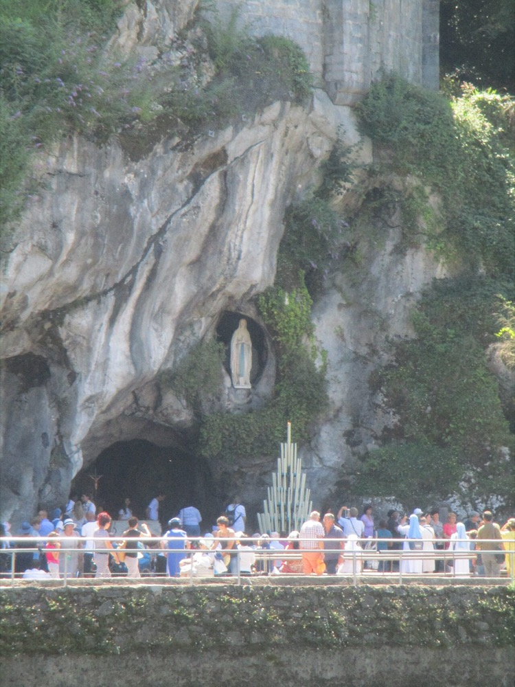
露德的馬撒比耶山洞（Thomon, CC BY-SA 4.0）
這些故事，能說明什麼？
- 它們都不是證明：當事人的記憶、旁人的詮釋、醫學上的「無法解釋」，都還留有其他解釋的空間。
- 但它們也讓人很難斷然地說：死亡就是一切的終點，世界只有看得見的這一部分。
- 理性停在門與牆之前，無法替我們判定何者為真。許多人正是因為親身經歷或親眼見到這樣的事，才選擇相信：死，是一扇門。
哲學怎麼看：虛無主義能被確信嗎？
支持死後不存在
- 意識依賴大腦。
- 死後沒有人回來作證。
- 前面那些案例，都還有其他解釋的可能。
支持死後存在
- 達賴喇嘛不認為意識依賴大腦；聖多瑪斯也認為，理解並不依賴生理性的機制。
- 各大宗教傳統都見證死後的世界，民間也有觀落陰這類自稱見過亡者的經驗。
- 前世記憶、借屍還魂、無法解釋的治癒這類神蹟奇事，讓人感到不可思議、難以解釋。
- 人對永恆的渴望，以及總想超越自己的那份傾向。
兩邊各執一詞，論據的層次相當，所以斷言「死後什麼都沒有」同樣達不到確信。虛無主義本身也是一種信念，不是理性已經確信的結論。
理性的盡頭
理性無法透視門／牆何者為真，但能洞察各個選項的意義。
門／牆思辨：理性沉默，但能洞察意義
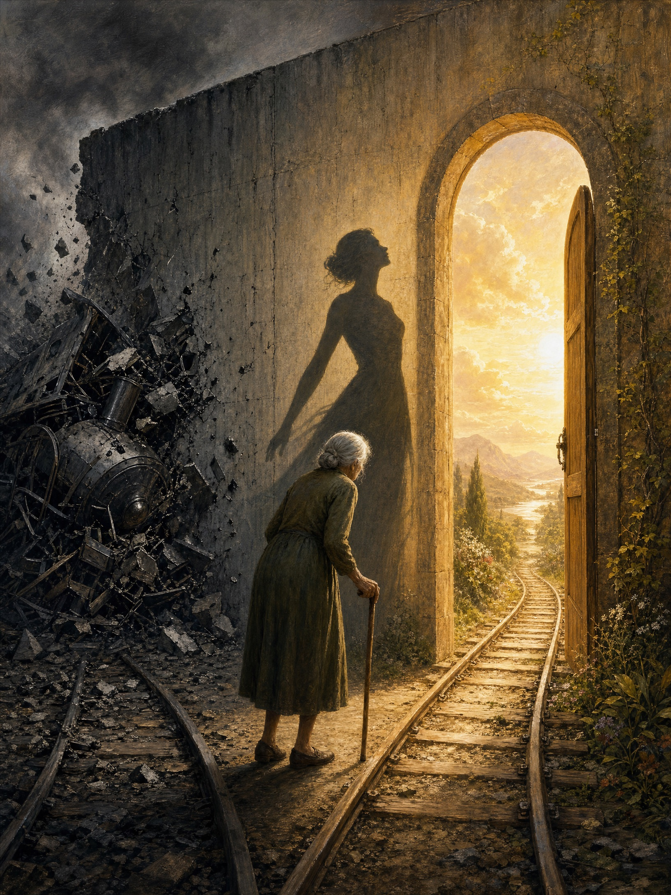
死，是一扇門，還是一堵牆？
哲學面對門／牆，只能保持沉默——理性無法透視何者為真。但理性能洞察各選項的意義：
若是牆，人生再精采，結局就是去撞牆（＝卡繆的荒謬）；
若是門，則自我的超越性、對真善美聖的嚮往、對永恆的盼望，都得到合理而融貫的理解。
〈未知死，焉知生〉，《科學人》2010 年 10 月號。
連最清醒的理性，也難肯定生命本身的意義
哲學家 Herbert Fingarette，97 歲。他一生著書論證「怕死並不理性」；可當死亡真的逼近，他在鏡頭前坦承：自己也想不通——「我為什麼活過，又為什麼非走不可？」
理性能拆穿種種對死亡的逃避，卻仍無法肯定「生命本身究竟有沒有意義」。科學與哲學走到這裡，一同沉默。
這正呼應卡繆與托爾斯泰：在理性的盡頭，意義問題依然懸而未決——人，於是被逼到了「信念」的門前。
托爾斯泰：理性走到盡頭，逼出信仰
功成名就的托爾斯泰，被一個問題擊垮：若生命終歸一死，這一切還有什麼意義？誠實地用理性與科學追問到底，他得到的答案卻是——生命若侷限於此世，便是無意義的。
面對這樣的結論，他認為人只有四條出路。
退回對問題毫無所知的童稚無知
渾渾噩噩地追求享樂
明知荒謬虛無，仍苟延殘喘
強大而邏輯一致者，乾脆了結生命
四條路，沒有一條真正解決問題。於是在理性的盡頭，托爾斯泰轉向信仰——相信生命有超越此世的意義。
確立終極信念的途徑（托爾斯泰五法）
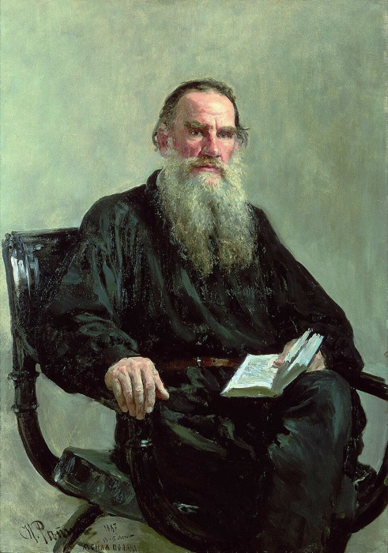
51 歲寫《懺悔錄》時自承：「我食有佳肴，住有高樓，美女做伴，高朋滿座，名滿天下。」
擁有一切，卻被胞兄之死擊垮——「他智慧、善良、認真，年紀輕輕染病、痛苦一年餘而逝；沒有任何理論能回答：他為何活過、又為何非死不可。」
他尋找終極信念的五種途徑：
- 理性思考——對門／牆、虛無與盼望的哲學追問。
- 生命體驗——苦難、愛、失落中親身領會的真理。
- 觀察眾生——看別人怎麼活、結局是不是你要的。
- 服務利他——在付出與愛中，意義自然顯現。
- 齊克果式信仰跳躍——在理性的盡頭，做出抉擇。
「人要潛水到生命真理的終極深處，再從那裡浮出水面，回到人間。」
生命的意義不能發明，只能發現
引文出自 Viktor Frankl《活出意義來》（Man's Search for Meaning）。影片：Einzelgänger〈Viktor Frankl 的哲學〉（2021）。
Frankl：「我們存在的意義不是自己發明出來的，而是被發現的。」
The meaning of our existence is not invented by ourselves, but rather detected.
所以，問「生命有什麼意義」其實是要去體認到——是生命在問我。
Vervaeke：問「生命本身的意義」，是搞錯了問題？
多倫多大學 John Vervaeke：問「生命本身的意義」（meaning of life）是搞錯了問題——它預設宇宙有一個「為我而設的宏大計畫」等我去發現；那是過去「上帝掌管一切」的世界觀，世俗社會已不再相信。他主張該問的是「生命之中的意義」（meaning in life）＝與自己、與他人、與世界的連結感：意義既不純在我、也不純在宇宙，而在兩者恰當的關係裡。
Sean Kelly：人生雖荒謬，仍有「有意義的時刻」？
哈佛 Sean Kelly：同意卡繆——人生作為整體是荒謬的（萬事看似別具意義，其實沒有；如卡繆的「默劇」與薛西弗斯）。但他認為卡繆漏看了一面：人生仍有一個個「真正活著」的有意義時刻（初次伸手牽起對方、忘我的演奏或運動巔峰），而且正因有這些時刻，人生更顯美好。
人生不只是追求幸福而已There's more to life than being happy ｜ Emily Esfahani Smith ｜ TED
生命意義在於服務超越自我的事物，並透過自我超越活出最好的自己——而非只是追求幸福。
意義的四大支柱：歸屬感、服務他人的目的、超越感（感受到更宏大的存在）、敘事（透過講述自己的故事來賦予意義）。
總結
最後，把今天收束成一句——人生無常，唯愛永恆。
再投一次：死，對你而言比較像一堵牆還是一扇門？
走完今天這一路，再投一次，看看自己的想法有沒有改變。
已投 0 票
0%
0%
0%
人生無常，唯愛永恆
是牆，還是門，沒有人能替你先走一趟回來；
但你可以選擇，用什麼樣的心，走向它。
知道為何而活的人，連最黑的夜，都能走得從容。
孫效智
彩蛋·主題曲〈門與牆〉
〔主歌一〕
有人說 死是一堵牆
走到盡頭 就只剩下黑暗一片
有人說 死是一扇門
推開以後 還有光在另一邊
〔主歌二〕
我站在這裡 還沒走到那一天
卻已經開始 想像那扇門或那堵牆
若終點是虛無 我為何還握著手中的火
若終點有光 我又該怎麼 走完這一程
〔副歌〕
是牆，還是門
沒有人能替我 先走一趟回來告訴我答案
是牆，還是門
但我可以選擇 用什麼樣的心 走向它
知道為何而活的人
連最黑的夜 都能走得從容
這一道題 要我用一生 誠實作答
〔尾聲｜輕聲〕
若有一天 我也走到那扇門前
願我能說：我沒有白活這一場
是牆，是門……我不再害怕
下週見
W9（11/4）進入價值思辨——價值思辨無所不在
課前作業⑤
引用來源
- Wilde, O. (1891). The Picture of Dorian Gray, ch. 3.
- Volf, M., Croasmun, M., & McAnnally-Linz, R. (2023). Life Worth Living（中譯《耶魯大學的人生思辨課》）。
- Gorrell, A. W. The Gravity of Joy（引自《耶魯大學的人生思辨課》）。
- CIRP Freshman Survey (2019)；2024 臺大新生講座問卷（學生版、教師版）。
- 世界衛生組織《組織法》前言（1948）。
- Killingsworth, M. A., Kahneman, D., & Mellers, B. (2023). PNAS.
- Dittmar et al. (2014)；Baumeister et al. (2013)；Oishi & Diener (2014)；Li, Dou & Liang (2021)；Lucas et al. (2003)；Albrecht & Devlieger (1999)；Garmany & Terzic (2024)；Gerstorf et al. (2016)。
- Harvard Study of Adult Development（Robert Waldinger）；Seligman, M. (2011). Flourish.
- Hummer, R. A., et al. (1999)；Holt-Lunstad, J., et al. (2010)；U.S. Surgeon General (2023).
- 《論語》〈學而〉〈里仁〉〈述而〉〈雍也〉；《孟子》〈告子上〉；王陽明《大學問》；《道德經》第四十一章。
- 一行禪師《無死，無懼》（No Death, No Fear）；《西藏生死書》；Heidegger, M. (1927). Sein und Zeit.
- 奧理略《沉思錄》；伊比鳩魯《致美諾西斯的信》；《好青年哲學讀本》。
- 托爾斯泰《懺悔錄》；Frankl, V. E. Man's Search for Meaning.
- 孫效智（2010）。〈未知死，焉知生〉。《科學人》，2010 年 10 月號。
- 賴憲政受訪，〈打破退休困境 不必存2100萬！賴憲政「72法則」年報酬10%資產7.2年翻倍〉，TVBS《健康2.0》（2026）。
- 呂冠緯（2026）。〈AI 不會取代你，除非你放棄這件事〉。陽明交通大學畢業典禮演講，均一教育平台 YouTube 頻道。
終極信念，有三種可能性
存在虛無主義
人生方程式的定義域若侷限在此世，是無解的。
純從理性看，斷滅虛無難以支撐生命的韌性。
不可知論
不盲信宗教，純粹以哲學來思考這個問題；在理由足以判定之前，對死後是否存在不做斷言。
既不肯定，也不否定，而是懸置判斷本身。
宗教信仰
宗教相信：宇宙並非無意識、無明的機械運行；生命具有某種真實的永恆性與超越性。
唯有「肯定生命即使置於死地仍有希望」的信念，才給人「知道為何，所以能忍受任何」的力量。
如果死亡是一堵牆，人生還能有意義嗎？
- 美國哲學家 Owen Flanagan 是自然主義者。他接受人是有限的物質存在，不訴諸任何超自然的力量來解釋人生。
- 心靈哲學把「意識怎麼從大腦活動中產生」稱為「困難的問題」。Flanagan 認為還有一個更難的問題，就是在一個只有物質的世界裡，意義怎麼可能存在。
- 他的回答是建立一門研究「人怎樣才能活得好」的學問，稱為 eudaimonics。它結合哲學、腦科學、心理學，也借重佛教、儒家、亞里斯多德與斯多噶學派的修身功夫。
- 他認為，活得有道德、有真正的朋友、有機會發揮才能，人生就有意義。批評他的人則認為，他並沒有真正解決自己提出的這個問題。
Owen Flanagan, The Really Hard Problem: Meaning in a Material World (MIT Press, 2007)；轉引自 MIT Press 書介、Peter B. M. Vranas 書評（Notre Dame Philosophical Reviews, 2008）、Mikael Leidenhag（Zygon, 2017）
延伸影片：尼采如何面對「上帝已死」之後的虛無
- 「上帝已死」指的是舊的價值體系崩塌，而不是在討論神存不存在。
- 宗教原本回答「世界為何存在、人為何活著」這類根本問題；這些答案一崩塌，人就面對虛無。
- 面對虛無，人常常逃向躺平，或另找民族、國家、財富這類新的偶像。
- 尼采的回答是成為「超人」：自己創造價值，全然肯定生命。
小鳴說 XiaoMingTalk〈如果你正被無意義感、虛無感所困，尼采的哲學將使你的人生煥然一新！〉（2026）12:40–15:50
延伸影片：卡繆如何面對人生的荒謬
- 卡繆認為，希望會讓人害怕失去、被未來牽制，因而無法活在當下。
- 他不接受自殺，也不接受為了逃避荒謬而硬造出一個意義。
- 他的回答是「反抗」：清醒地承認世界沒有給出意義，仍然用盡全力活下去。
- 既然沒有未來可以寄託，生命的全部重量就落在當下。
天際線哲思〈如果人生終將失去一切，努力的意義是什麼？加繆「荒謬哲學」給出的震撼答案〉（2026）20:59–22:59；繁體字幕為重新聽打
延伸影片：托爾斯泰如何走出意義危機
- 五十歲陷入存在危機：名利、家庭、文學成就俱全，卻被「既終將一死，何必在乎？」擊垮，一度得阻止自己尋短。
- 理性、哲學與科學都給不出出路：哲人導向「死勝於生」，科學把人化約為終將腐朽的能量團，對意義無一字安慰。
- 「井中人」寓言：上有猛獸、下有死亡惡龍，人只能舔食葉上幾滴蜂蜜苟活——追逐享樂，只是逃避。
- 轉折在農民：飽受苦難卻信仰堅定、活得有意義。托爾斯泰終於承認——唯有相信超越此世的無限與永恆，才能超越有限與死亡（即使理性視之為「無憑據的一躍」）。
理性的盡頭，轉向「超越」的信念
Jordan Peterson：痛苦與荒謬是真實的，不容否認；但愛與真理，有可能穿越痛苦與荒謬，把人帶向超越虛無的盼望。
當理性走到盡頭、無法肯定生命本身的意義，人並非別無選擇——他可以在「終極信念」上，向超越者敞開。